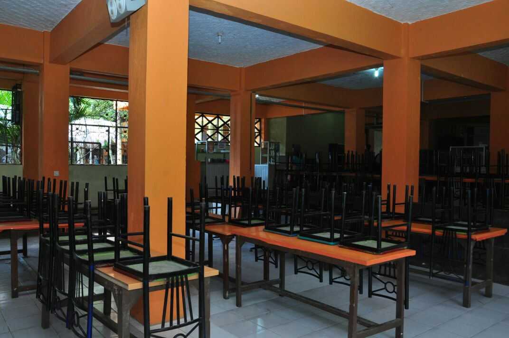
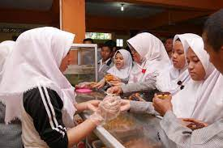

|  | KANTINSMK WIKRAMA BOGOR - Kantin Wikrama berdiri tahun 2004. Namun, di tahun 2017 kantin mulai berbenah diri menjadi kantin sehat. Predikat kantin sehat tersebut dinobatkan langsung oleh Dinas Kesehatan Kota Bogor setelah melakukan penilaian terhadap kantin Wikrama di tahun 2017. Hal tersebut karena, SMK Wikrama melihat sebagian besar aktivitas peserta didik berada di lingkungan sekolah, sehingga sudah menjadi tanggung jawab warga sekolah untuk memperhatikan kesehatan peserta didiknya, mulai dari makanan. Berbagai aspek penunjang kesehatan peserta didik sangat diperhatikan, mulai dari cara pengolahan makan, sarana yang digunakan, penjamah (pelayan) makanan, kebersihan tempat, serta perilaku konsumen. Menu makanan yang dijajakan di kantin sehat SMK Wikrama sangat beragam. |
|---|---|
|
Berkat kesungguhan pengurusnya dan seluruh warga sekolah yang mendukung, kantin sehat Wikrama termasuk dalam sekolah pilihan yang direkomendasikan untuk diteliti langsung oleh Badan Pengawas Obat dan Makanan (BPOM). Hal tersebut terjadi berdasarkan laporan Dinas Kesehatan (Dinkes) Kota Bogor tentang kantin sehat di SMK Wikrama Bogor. Akhirnya pada 15 Oktober 2018, kantin sehat Wikrama mendapatkan kunjungan dari anggota Puskesmas Pulo Armin, Dinkes Kota Bogor dan BPOM. Hasil dari penilaian tersebut, kantin sehat SMK Wikrama meraih nilai 95 dari skala 100. Nilai yang cukup memuaskan. Feri Firmansyah selaku pembina kantin sehat mengemukakan “Evaluasi penilaian tersebut yaitu bahwa kantin sehat perlu meerhatikan cara penanganan hama serta cara menyimpan makanan mentah dan matang perlu diperhatikan lagi.” Feri Juga membeberkan bahwa untuk kedepannya kantin sehat SMK Wikrama harus lebih baik. “Kantin Wikrama harus terus berkembang, tetap konsisten, dan memberikan yang terbaik untuk konsumen SMK Wikrama,” Beber Feri. (SH/MF/GU/IU) |
 |